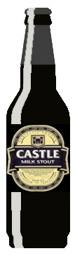
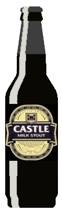

Guinness
År 1759, vid 34 års ålder, skrev Arthur Guinness på ett hyreskontrakt för St. James´s Gate Brewery, Dublin. Han arrenderade bryggeriet i 9000 år till en årlig hyra på 45 pund. Bryggeriet var bara 4 tunnland stort, nedlagt och hade lite bryggutrustning. Trots detta byggde Arthur snabbt upp en framgångsrik handel och 1769 hade han börjat exportera sin öl till England.
HemsidaMilk Stout
Ok, så det kanske inte är den konstigaste ölstilen som finns, men har du verkligen slutat tänka på vad en milk stout är? Har den mjölk i den, eller är den mjölkaktig i konsistensen? Är Guinness en milk stout? När jag tänker efter, vad är det som gör något till en mjölkstark? Erkänn det...Du har druckit dessa öl i flera år och du inser nu att du inte är riktigt säker på vad du dricker.
HemsidaObsidian Stout
Kommer in på nummer 6 på Clean out the Fridge Countdown Part Deux är en annan brygd från Deschutes-teamet: Deschutes Obsidian Stout (för Deschutes historia, se min Black Butte Porter-recension). Denna öl, som så många från Bends första bryggeri, är uppkallad efter ett närliggande landmärke, närmare bestämt Newberry National Volcanic Monument, som ligger 13 miles söder om Bend, som innehåller ett av världens största obsidianflöden (över 700 acres), kallad Big Obsidian Flow.
Hemsida 
